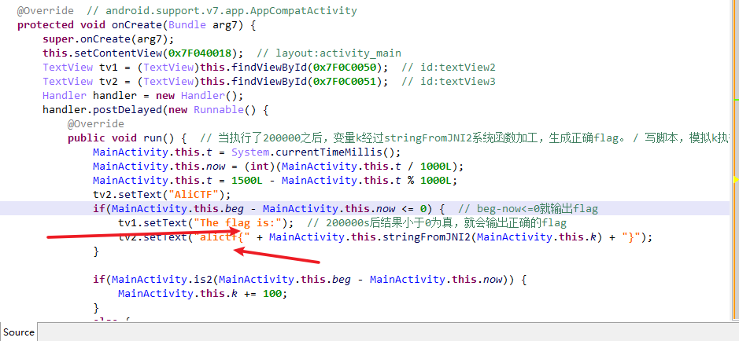
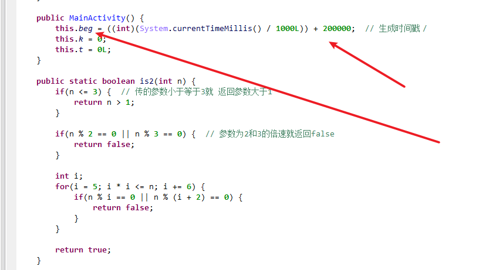
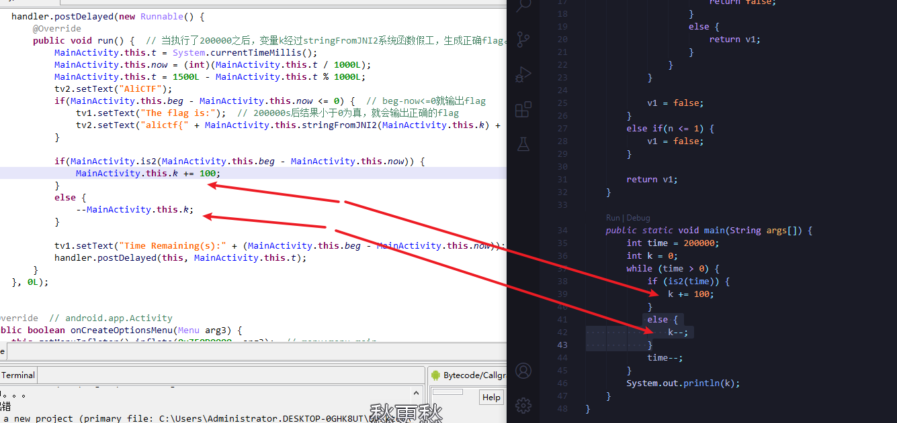
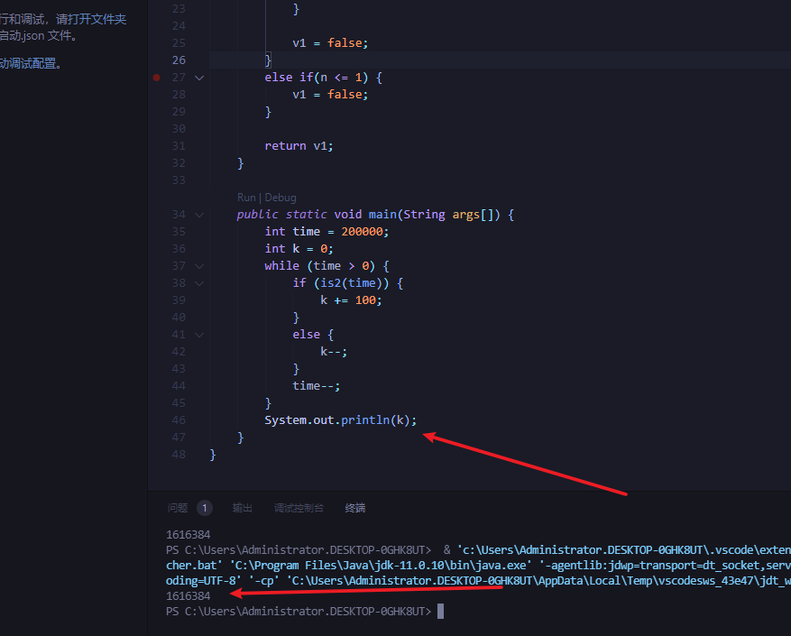
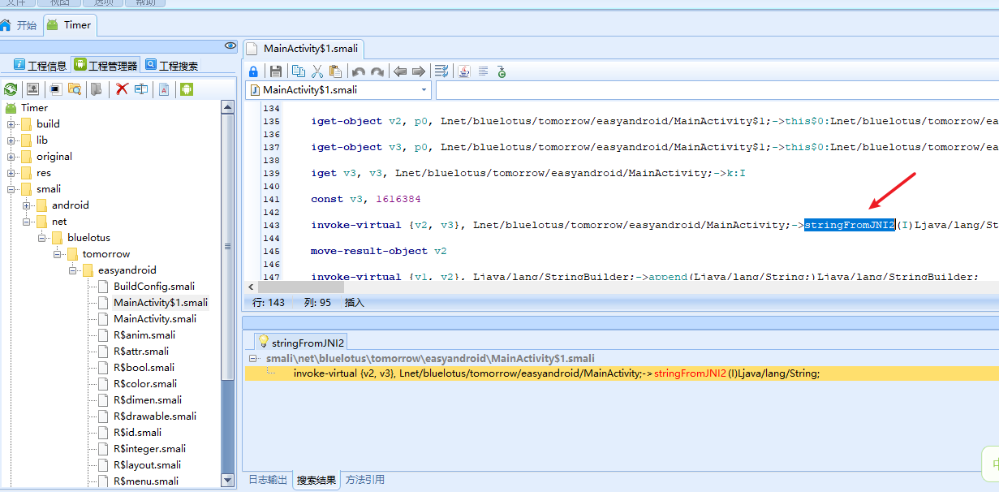
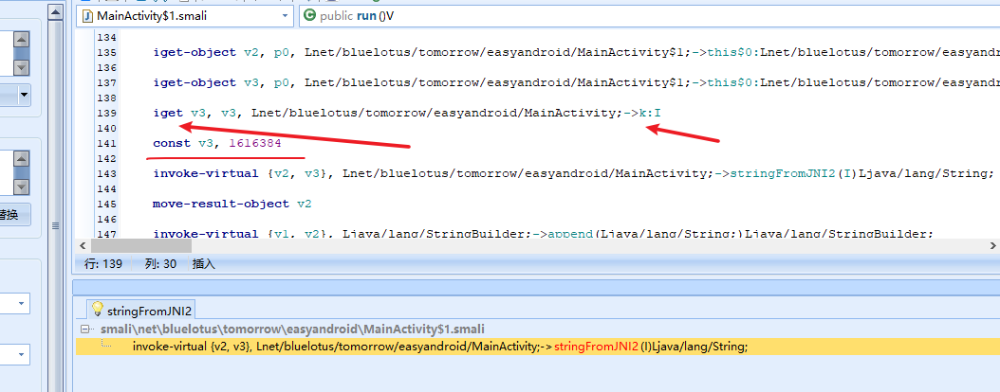
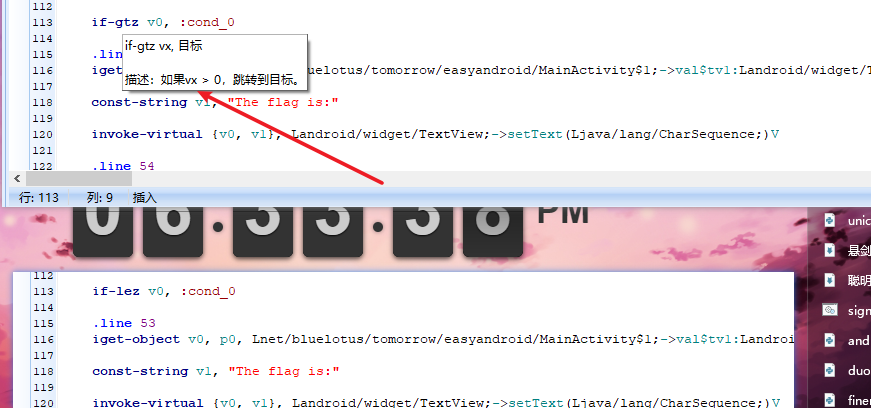
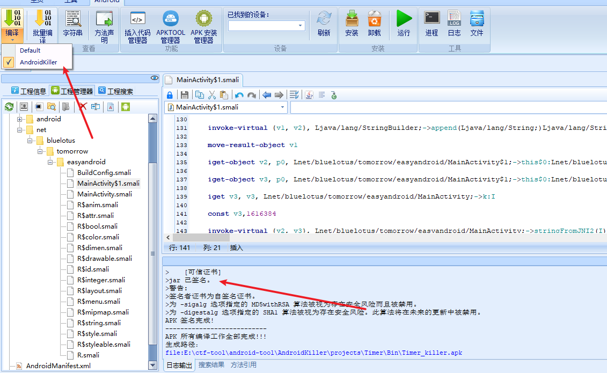

直奔主题,jeb打开。看反汇编mainactivity的代码。直接看到flag结果的地方
判断如果beg-now(当前时间)<=0就输出正确的flag

往上看回调的mainactivity，beg生成就是当前时间+200000s。beg-now就相当于是200000s一直减当前过去的秒数。就是倒计时。

上面的flag输出的地方又涉及到了k。在下文k的计算又收到了is2函数的影响。直接跟进去看is2函数。可以自己写脚本计算k。把is2函数扒拉下来，在给他传参数。这里的脚本是网上copy来的。is2那边应该是老版本jeb反汇编的结果。我这里是新版本，就没有改脚本了
脚本中就是把time当做参数传给了is2。让is2来计算。如果返回的是true，就让k+100。如果返回false，k就-1。最后200000次之后。k的值被计算出来了

1 | package test; |
计算出k的值是1616384。打开android killer修改smail代码

进入主函数入口。搜索stringFromJNI2，直接定位输出k处，修改判断beg-now的代码。以及直接给定k的值

修改变量k的值，iget，把k存在了v3寄存器里。寄存器用v开头数字结尾的符号来表示
其格式为：iget 目标寄存器 源对象 变量签名。
我们直接用const把1616384赋值给v3。
const v3,1616384

这里把最后的k值设置为了执行200000次后的正确值之后。
但是并没有修改beg或者now的值。beg-now的判断。还是不成立的。不会输出flag。所以我们要把≤改成＞。
但又因为代码里是相反的就把if-gtz(＞)改为if-lez(≤)。

编译签名，生成最后的apk。模拟器运行。一定要签名的。默认编译可能不签名，所以模拟器安装不上？

最后
参考
1.https://www.52pojie.cn/thread-926079-1-1.html
2.https://blog.csdn.net/cf260469080/article/details/106446078
3.https://www.cnblogs.com/xiaochaofang/p/14455925.html